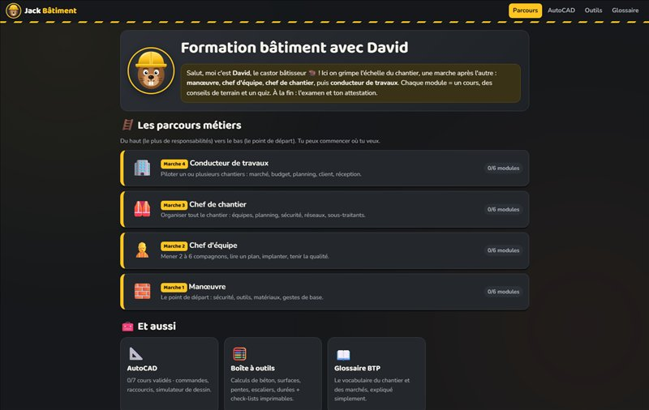
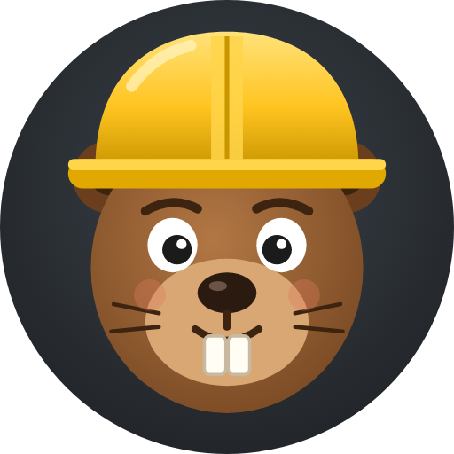

AutoCAD
7 cours, des interfaces aux métrés, et un simulateur de ligne de commande avec 6 missions.
- Table des commandes en français et en anglais
- Entraînement aux raccourcis
- LIGNE, CERCLE, RECTANG, coordonnées…
JACK BÂTIMENT · FORMATION AUX MÉTIERS DU CHANTIER
De manœuvre à conducteur de travaux, une marche après l'autre : des cours clairs, des conseils de terrain, des quiz, un examen final et ton attestation. Avec AutoCAD, un atelier prix et devis, et une boîte à outils de chantier en plus.
Gratuit, dans ton navigateur, sans compte.


LES PARCOURS MÉTIERS
Tu peux commencer où tu veux. Chaque parcours a 6 modules, puis un examen final de 15 questions : avec 75 %, tu obtiens ton attestation à imprimer, avec ton nom.
Le point de départ : sécurité, outils, matériaux, gestes de base.
Mener 2 à 6 compagnons, lire un plan, implanter, tenir la qualité.
Organiser tout le chantier : équipes, planning, sécurité, réseaux, sous-traitants.
Piloter un ou plusieurs chantiers : marché, budget, planning, client, réception.
Chaque module : un cours, « À retenir », « Sur le terrain », et un quiz de 5 questions. Après chaque erreur, David t'explique pourquoi, et peut te le lire à voix haute.
ET AUSSI
7 cours, des interfaces aux métrés, et un simulateur de ligne de commande avec 6 missions.
Les calculs de tous les jours sur un chantier.
Un cours « Apprendre à faire un devis » en 6 modules, avec examen et attestation.
À imprimer et à emporter sur le chantier.
COMMENT ÇA MARCHE
Une leçon courte, avec des conseils de terrain. David peut la lire pour toi.
5 questions par module, et une explication après chaque erreur.
15 questions tirées au hasard : 75 % pour valider le parcours.
Avec ton nom, signée par David le castor.
Jack Bâtiment t'aide à apprendre. Il ne remplace ni les formations obligatoires (CACES, AIPR, habilitation électrique, SST, amiante…), ni les consignes de ton entreprise. Vérifie toujours les textes à jour (Code du travail, INRS, OPPBTP). Les prix de la bibliothèque sont des ordres de grandeur, à remplacer par ceux de ton entreprise.
QUESTIONS
Oui. Jack Bâtiment s'ouvre dans ton navigateur, sans compte et sans abonnement.
Dans ton navigateur, sur cet appareil. Si tu effaces les données du navigateur ou changes d'appareil, tu repars de zéro.
Non. C'est une attestation de fin de parcours, pour garder une trace de ce que tu as appris. Elle ne remplace pas les formations et habilitations obligatoires.
Non. Les cours et le simulateur de ligne de commande fonctionnent dans l'appli, sans installer le logiciel.
Oui, l'appli s'adapte à l'écran. Les check-lists s'impriment mieux depuis un ordinateur.
Choisis ta marche et commence le premier module avec David.